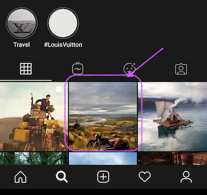
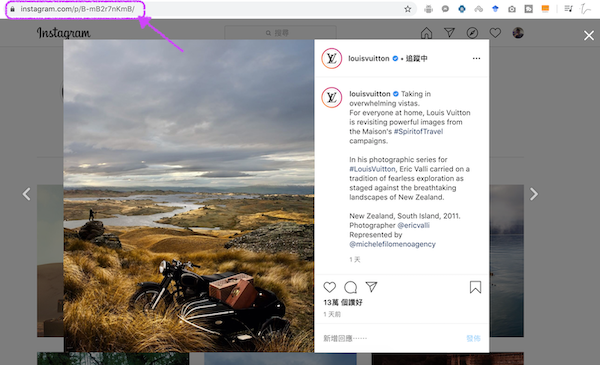

MyInsDownloader 允许你从公共帐户下载并保存Instagram照片、视频或幻灯片 MyInsDownloader 完全免费。 MyInsDownloader 简单易用。 MyInsDownloader 适用于全部的操作系统和浏览器。 MyInsDownloader 使用苹果和安卓设备下载Instagram照片和视频。 MyInsDownloader 不限制您的下载次数。
下载步骤非常简单，只需4步骤流程。即可在苹果、安卓或个人电脑上下载Instagram照片和视频到你的设备。按照它的指引，你将立即完成Instagram的批量下载！
对于个人电脑用户在你使用的浏览器（Chrome，Safari或Firefox）中打开Instagram网站，并找到希望下载的Instagram照片或视频。
对于安卓、苹果系统用户： 前往Instagram应用程序并找到需要下载的照片或视频，例如你喜爱并保存的照片或视频。是时候下载它们的时候了。
对于个人电脑用户 我们打开图片或视频并复制浏览器地址中的链接
对于安卓、苹果系统用户： 点击照片上方的三个点，然后点击“复制链接”。